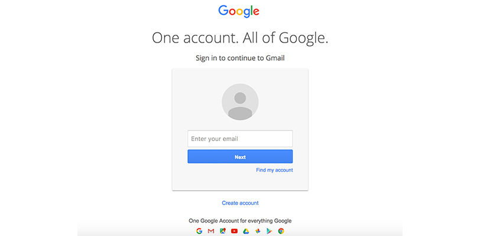

Critical Evaluation of Form

Every time I login into my Gmail account, I have to go through this portal. According to Bill Derouchey's article/slideshow on interface design, this form's interface does fulfill the needs of priority, clarity, and purpose.
Based on this screenshot, we can easily what is priority. The modal in the center where you have to input your email. I also like how Google product is implementing its material design concept. The login modal has nice shadow and color
contrast which looks like a piece of paper material sticking on the screen, and Google came up with this kind of design by studying real life material and incorporating these material’s propriety into their interface and icon design.
This interface also fulfills the needs of clarity. You can see the color blue that is indicating where you should click to go next and the profile icon that is telling you if you are logging in the right account. The interface design also shows purpose,
by looking at the icon and headers users instantly know what this interface is for, and there is no confusing since everything is simple and easy to understand.
Link to Bill Derouchey's article/slideshow